اللعب
للروضة غرفة لعب خاصة فيها حوض كرات، وساحة مظللة فيها زحاليق. اللعب عند الصغار جزء من التعلّم مثل الفصل تماماً.
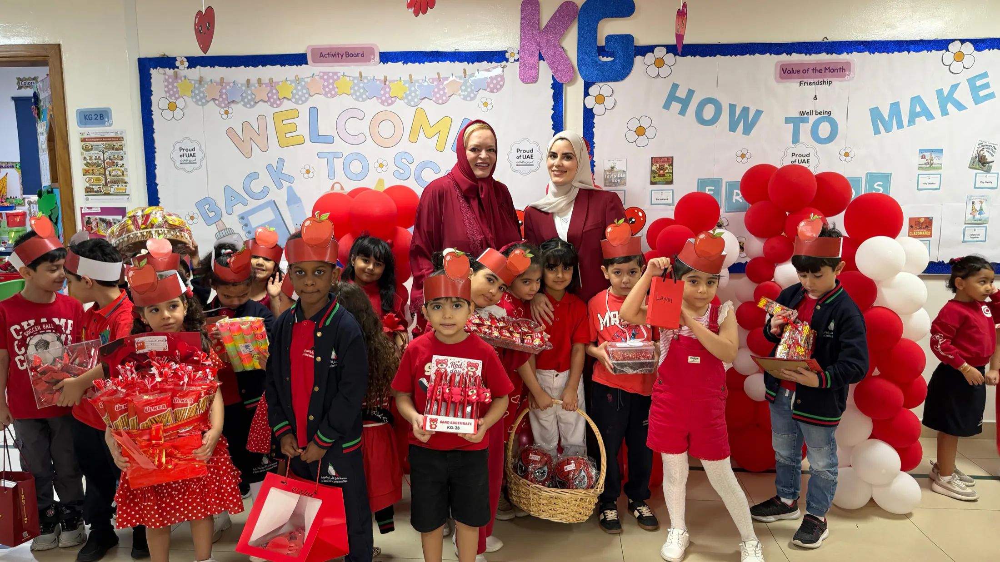
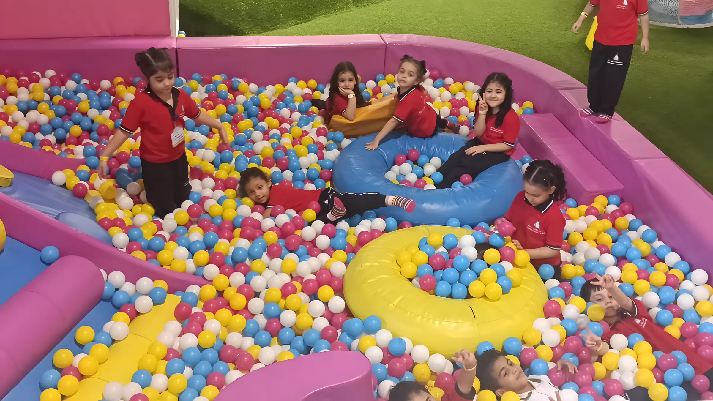
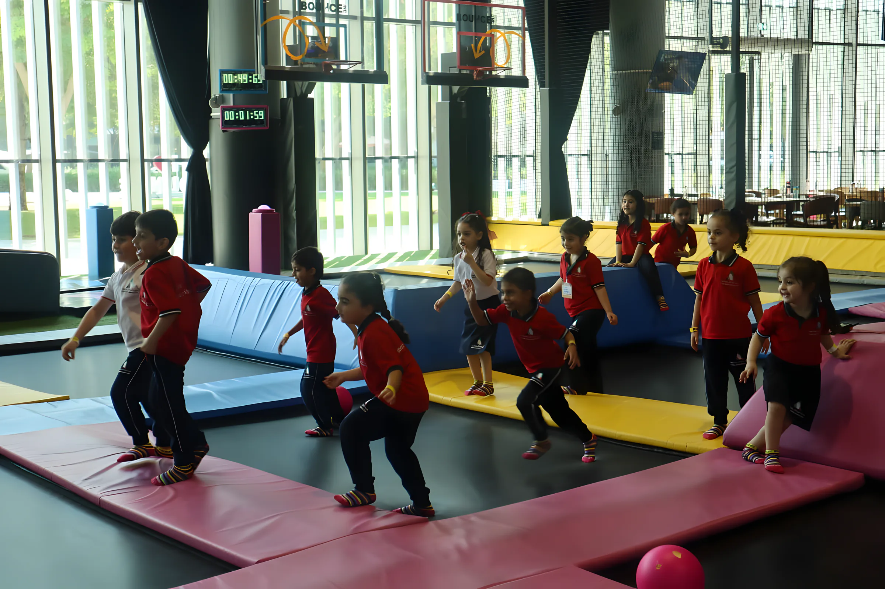
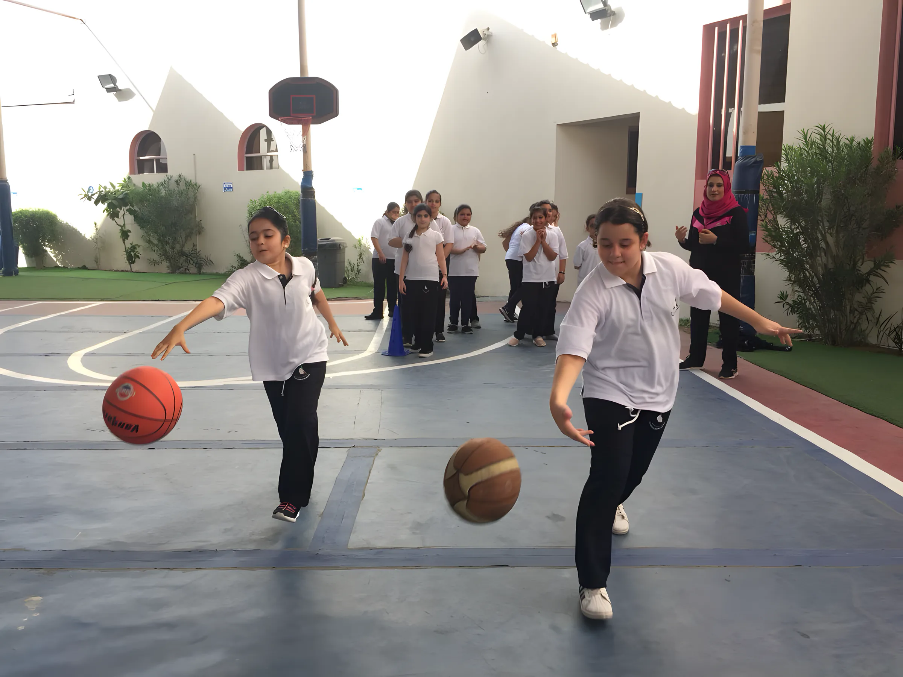
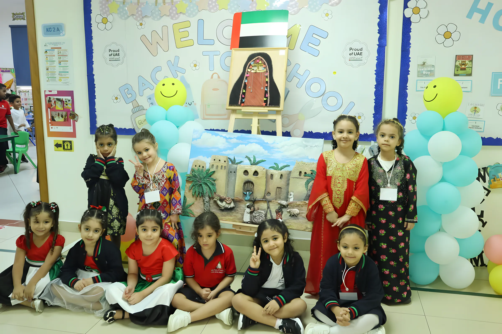
مدرسة بمنهج أمريكي في الرمثاء بالشارقة منذ 2003، من KG1 حتى الصف الثاني عشر. التسجيل للعام 2026–2027 مفتوح الآن.
نعلّم أبناء الرمثاء منذ عام 2003. منهج أمريكي من KG1 حتى الصف الثاني عشر، ومقاعد لأكثر من 1,000 طالب وطالبة، ومن الصف الخامس فما فوق يدرس البنون والبنات في فصول منفصلة.
المديرة والرؤية والقيم (بالإنجليزية)ماذا تعني كل مرحلة، وكم تكلّف السنة كاملة في 2026–2027، شاملة الكتب والزي المدرسي.
دوام صباحي من 7:30 حتى 12:30، مع فصولهم الخاصة وغرفة اللعب والساحة المظللة.
9,516–9,617 درهم سنوياًدوام كامل حتى 2:35 ظهراً. اختبارات MAP تبدأ من الصف الثالث، ومعها CAT4 في السنة نفسها.
10,867–13,576 درهم سنوياًفصول منفصلة للبنين والبنات. اختبار MAP مرتين أو ثلاثاً في السنة، وCAT4 في الصفوف 5 و7 و9.
14,082–16,674 درهم سنوياًفصول منفصلة. اختبارا PSAT 10 وSAT للتقديم الجامعي، إضافة إلى EmSAT.
28,630–31,630 درهم سنوياًمن جدول رسوم المدرسة للعام 2026–2027. تُدفع على ثلاث دفعات: الأولى نقداً عند التسجيل، ثم شيكان بتاريخ 1 ديسمبر و1 مارس. الحافلة المدرسية برسوم إضافية: 4,800 درهم سنوياً داخل الشارقة وعجمان، و6,000 درهم من دبي وأم القيوين. جدول الرسوم كاملاً
حصلنا من Cognia على صفة المرشّح في 2025، ثم على الاعتماد الكامل في أقل من سنة وفق معاييرها الجديدة، بمؤشر جودة تعليم (IEQ) بلغ 307، وهو أعلى من المتوسط. وتقيّم هيئة الشارقة للتعليم الخاص المدرسةَ بدرجة «جيد».
سنة افتتاح المدرسة في الرمثاء. أكثر من عشرين عاماً مع عائلات المنطقة.
درجتنا في مؤشر جودة التعليم من Cognia عند الاعتماد الكامل في 2026.
طالب وطالبة تتسع لهم المدرسة، من KG1 حتى الصف 12.
مختبرات ومكتبة وملاعب ومساحات واسعة للعب. بعض الأماكن التي يسأل عنها أولياء الأمور.
للروضة غرفة لعب خاصة فيها حوض كرات، وساحة مظللة فيها زحاليق. اللعب عند الصغار جزء من التعلّم مثل الفصل تماماً.
ملعب كرة قدم مظلل، وملعب خارجي لكرة السلة والتربية البدنية، وصالة رياضية. ويخرج الطلاب في رحلات أيضاً، مثل زيارة محطة الإطفاء.
في مختبرات تقنية المعلومات والابتكار يخطط الطلاب ويبرمجون ويختبرون ويبحثون، وهي مهارات تنفعهم في أي عمل لاحقاً.
مكتبة المدرسة، ومختبرات العلوم، و«الحديقة السرية» مساحتنا للتعلّم في الهواء الطلق.
من صور المدرسة نفسها. والمزيد كل أسبوع على إنستغرام @akaisramtha.
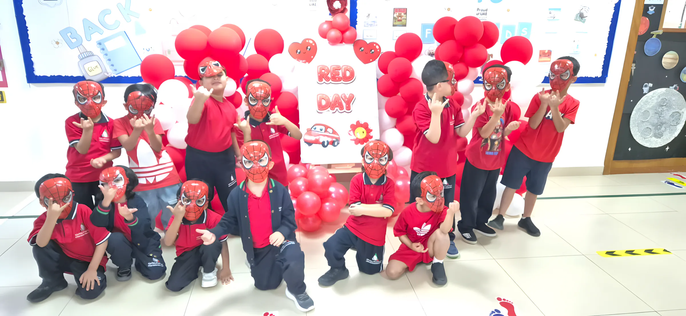
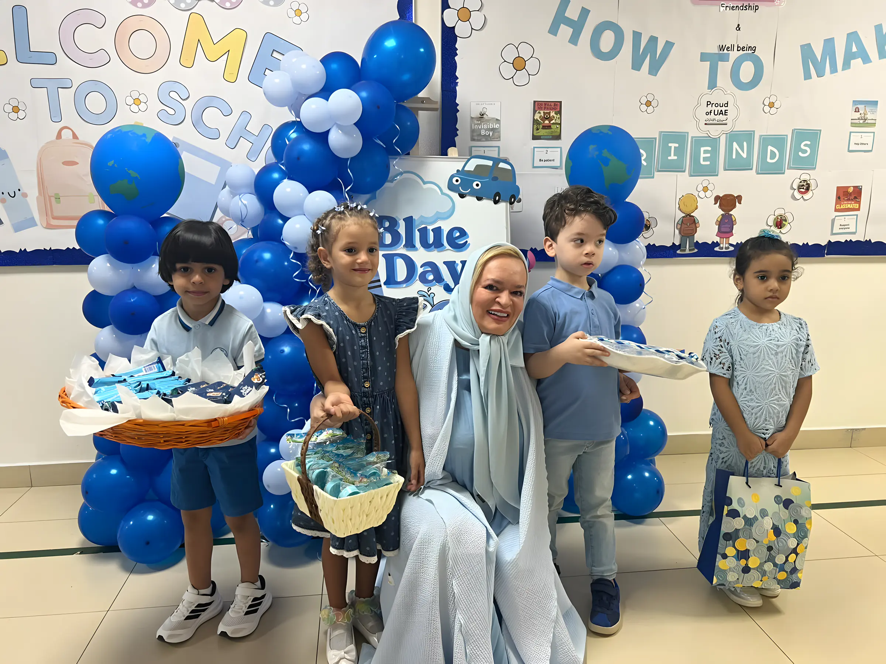
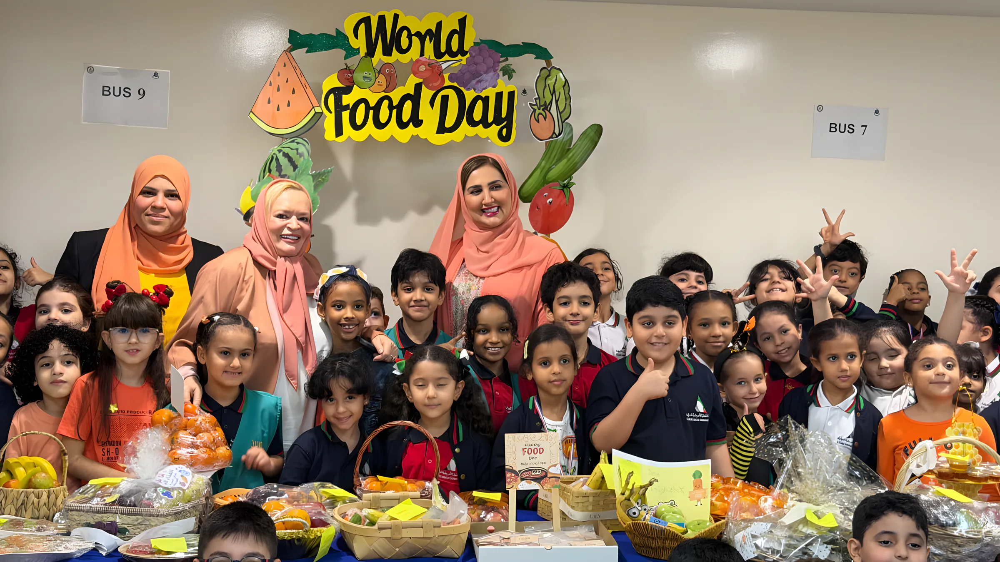
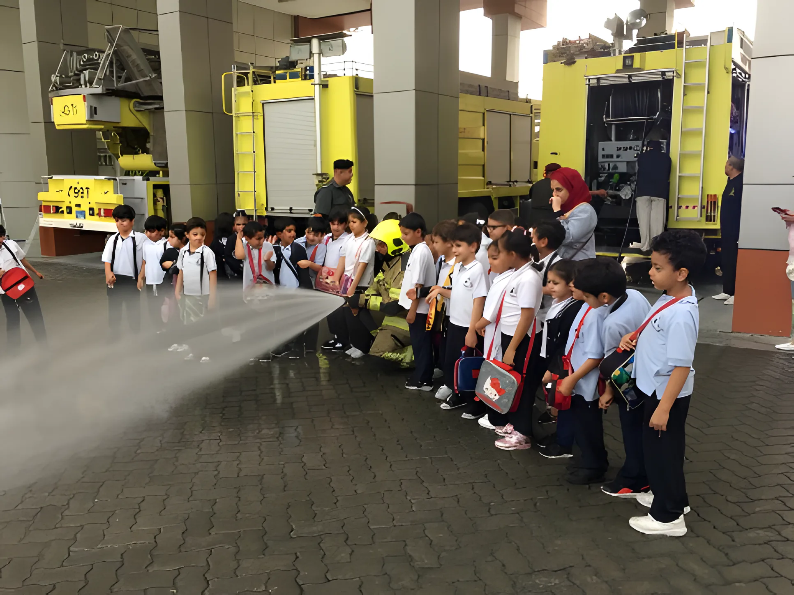
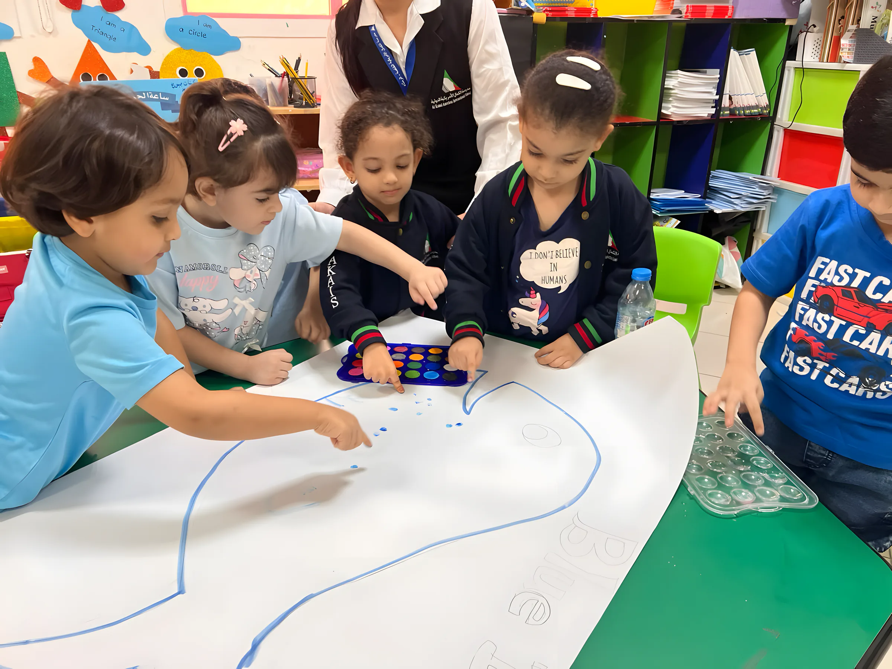
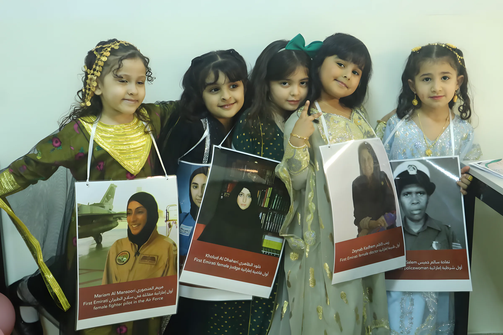
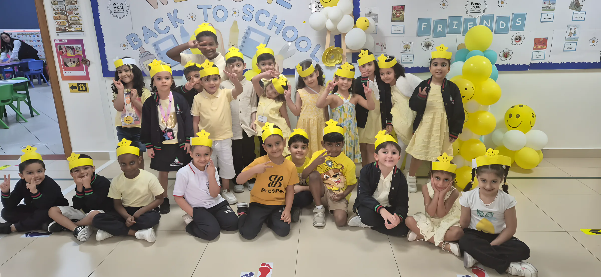
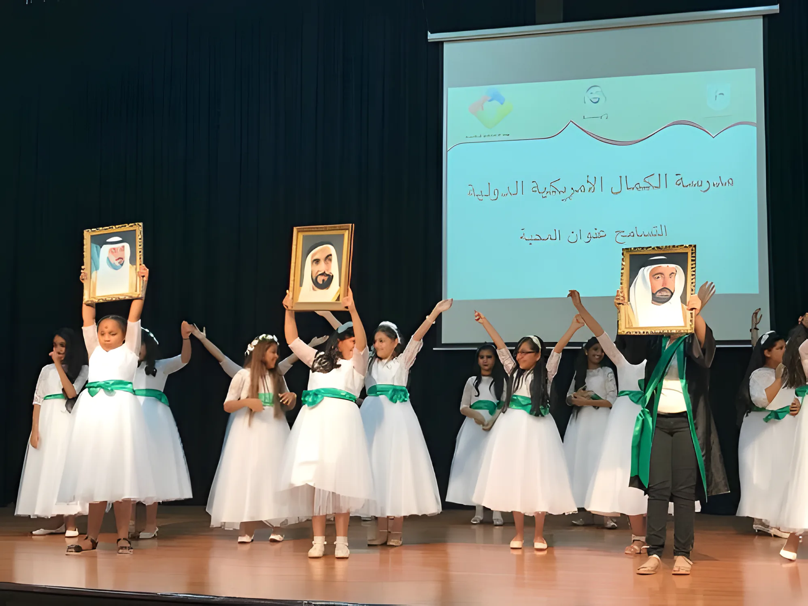
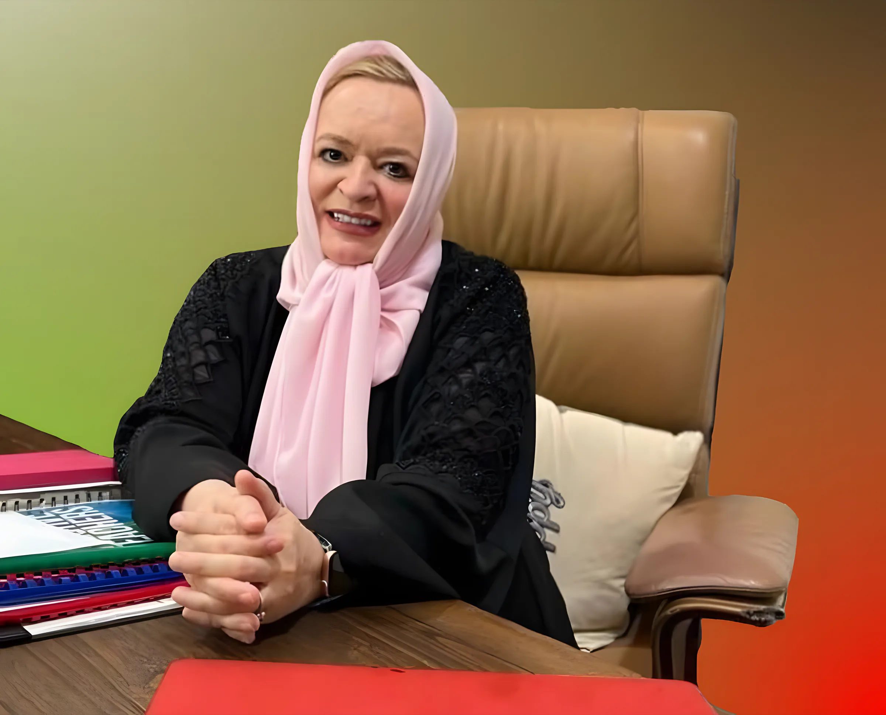
أربع خطوات، ومسؤول التسجيل يرافقكم فيها على الهاتف أو في المدرسة.
اتصلوا أو راسلونا واتساب على 06 538 3136 مع صف طفلكم للعام القادم.
الجوازات مع الإقامات، الهويات الإماراتية، شهادة الميلاد، بطاقة التطعيم، شهادة النقل وآخر تقرير. المستندات الـ12 كاملة
رسوم التسجيل 500 درهم تُخصم لاحقاً من الرسوم الدراسية. أرسلوا المستندات إلى info@akaisramtha.com أو أحضروها إلى المدرسة.
نقداً مع الكتب والزي، وتُشترى من المدرسة. وشيكان يغطيان بقية السنة.
الرسوم والمستندات واليوم الدراسي وكل الاختبارات في صفحة القبول والرسوم.
مدرسة الكمال الأمريكية الخاصة
الرمثاء، الشارقة
تفتح البوابات للطلاب الساعة 7:00 صباحاً. أولياء الأمور الذين يستلمون بالسيارة: قبل 2:45 ظهراً، أو 2:15 يوم الخميس.
| الروضة KG1 و KG2 | 7:30 – 12:30 |
| من الصف الأول، الاثنين–الأربعاء | 7:30 – 2:35 |
| من الصف الأول، الخميس | 7:30 – 2:00 |
البريد info@akaisramtha.com · الرسوم: accountant@akaisramtha.com